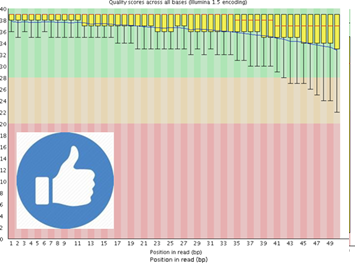
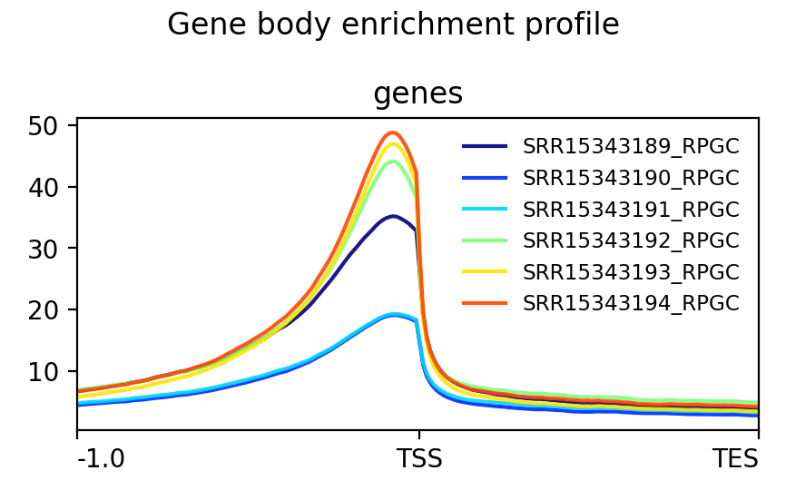

Step 1: Data Quality Control
Raw sequencing data (FASTQ files) is assessed for quality using tools like FastQC and MultiQC. This step detects issues such as adapter contamination, low-quality reads, or GC bias before continuing with further analysis.


Step 2: Trimming
Trimming removes adapter sequences and low-quality bases from reads. Tools like Trimmomatic or fastp ensure that only high-quality sequences are kept, improving mapping efficiency and accuracy.
Step 3: Alignment
Adapter-trimmed reads are mapped to the reference assembly using Bowtie2. This step produces BAM files, showing where each read maps and allowing for peak detection.
Step 4: Enrichment visualization
This step generates files and plots suitable for visualizing the enrichment both genome-wide and over specific genomic features. The output can help determine whether the ATAC-seq signal is consistent and biologically meaningful.
Step 4.1: Create normalized bigWig files
The bigWig fomat is in an indexed binary format useful for displaying dense, continuous data in genome browsers such as the UCSC and IGV. Normalization allows to compare the coverage accross multiple samples - this is not possible with BAM files.
Step 4.2: Generate gene-body metaprofile
Generate plots showing the signal or enrichment score for your data over sets of genomics regions, typically genes. This gives you a quick visualization for the genome-wide enrichment of your samples at the TSS, and accross the gene body.

Step 5: Peak calling
MACS2 is one of the most popular peak-calling algorithms for ChIP-seq. For ATAC-seq data we are also looking for genome-wide regions of enrichment but in this case without comparison to a standard control sample (e.g. input DNA).
Step 5.1: Peak annotation to gene features
Peaks are annotated relative to known genomic features (e.g. conding sequence, intergenic regions, closest TSS, ...).
Step 5.2: Count reads in peaks
FRiP (Fraction of Reads in Peaks) is a metric used to assess the quality of ChIP-seq and ATAC-seq data. The highest FRiP is, the better. According to ENCODE, ideally FRiP should be > 0.3, however FRiP > 0.2 is still acceptable.
Step 5.3: Creation of a consensus peakset accross samples
In order to perform differential accesibility analysis we need to be able to carry out the read quantification for the same interval across all of the samples in the experiment. To this end, the individual peak-sets called per sample have to be merged toggether in order to create a consensus set of peaks.